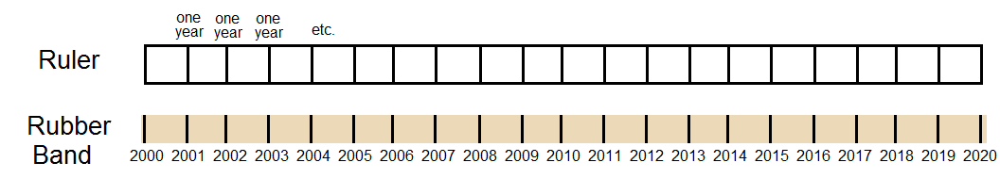
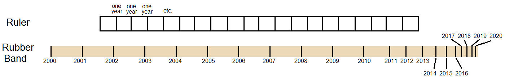

The Internet is Serious Business!
Home > Miscellaneous > On the New Decade
(Note: This was composed on the first day of 2020 to put in writing the many thoughts and feelings that were buzzing around in my head the night before, as I watched the Ball Drop on TV live from New York. It was begun spontaneously, written quickly, and is less structured and polished, and more unfiltered and immediate, than most other pages on this site. It is also deeply personal—even more, I think, than most other pages on this site—and I don't know of anybody besides myself who would care enough to read the thing in its entirety. Its purpose for me was overwhelmingly cathartic and therapeutic, but I make it available on this Web site for any who are interested.)
It is now 2020. It has now been over a decade since the last day of 2009! How am I, who more and more feels nostalgia for the first decade of the 2000s—how am I to accept this? I have not yet accepted that the 2000s are over; now am I to accept that it has been ten years since the last day of that decade? Never mind that the year 2000 was 20 years ago; never mind that 2005 was 15 years ago; but a whole decade since 2009? The 2010s, which once I disliked, have faded now into the past! How am I to move on? How am I to reconcile this with my innermost desires?
It will surely dawn on me over these next few days or weeks or months, slowly. I will steadily recognize that my favorite decade, the 2000s, has passed, and that the entire decade after it, during most of which I spent longing for its predecessor, and which I year by year became more dissatisfied with—the entire decade after the golden one, these strange modern times
in my life when I felt that everything had gone sour, and so wrong, and nearly everything good had expired—now, even that is gone, too? To what has it melted away?
Time is, in my perception, moving faster. To give a homeless man $1,000 will most assuredly mean the world to him; to give it to a man living comfortably in the middle class will strike him as a very pleasant and generous gift; to give a billionaire the same amount will perhaps not even get him out of bed. So, too, a year might seem an eternity to a small child; a long but manageable span of time to a 40-year-old; and a blip to the man who has lived to 100—such is one of the many curses of growing old. In high school I felt, for the very first time in my life, the beginnings of the acceleration of my subjective perception of time: where did the year go? It only became more apparent when I was in university, and now, for the past two or three years, it has extended its creeping grasp now from years to months, from months to weeks, and even, I shudder to admit, from weeks to days. A day in my childhood felt like a week does now. I cry to Time, Stop! O, please, will you for once permit me to examine and reminisce about my life up till now, without interruption?
but it ignores me, and instead adds ever more speed to its pace.
And to feel this when I am still a young man, not even halfway through his twenties! Yet I have felt it for many years now, and the feeling at once swelled acutely when the new decade arrived without my invitation. How am I to feel, and to live, when I am 30? or 40? or 80? or, God forbid, when I am 100? when the decade after the decade after the 2000s (viz. the 2020s) has once faded? Or the decade after that decade, and the decade after that, etc., etc., has once passed? Am I not to be consumed with a longing for the past, which should become more pronounced every year? Am I not to go mad with nostalgia? Farewell, sanity! (And with it, happiness!)
2017 was three years ago, now? Well, it feels like it was only one year ago, or less. The calendar insists that 2013 was seven years ago, you say? Nay, I should like to inform you that it was about three years ago. That was the year (i.e. 2013) I graduated high school, and ever since then, the world to me has been frozen; and the calendar seems thinner: one year sweeps by first in 10 months, then 9, then 8, etc.—2019 in particular was a strange year
, for it elapsed in what must have been a few months, or thereabouts.
An illustration here will perhaps explain things best. Imagine a ruler and a rubber band: the rigid ruler represents the objective calendar, and, rather than units of length, in this example it measures units of time, years specifically; the flexible rubber band represents my subjective perceptions of time. The rubber band is stretched just so to the point that it is barely taut; then the ruler is placed next to it, and its regular markings for the years also marked on the rubber band, like so:

But my subjective perception of time (the rubber band) does not at all match the objective calendar (the ruler), you see. Instead, from its initial condition of everywhere being barely taut, stretch out the sections of the rubber band marking the years 2000–2010, leave the years 2011–2013 undisturbed, compress somewhat the years 2014–2016, and compress greatly all years past 2017. You will end up with something like this:

Such is my subjective perception of time: in the 2000s time seemed correct, and every year was allowed to breathe; but the three years 2017 to 2019 were all stuffed together into what formerly felt like a single year, or less. The calendar argues otherwise—See here, lolwut, your perception is mistaken, and indeed three whole years did elapse
, it says—well, then, to hell with it!
I admit that this is probably better than having it the other way around—that is, that the good years, namely the 2000s, being shortened and the bad years, namely post-2017 (or even post-2013), being elongated. At least as it is now, every glorious day of the 2000s was happily stretched, and every dreadful day of these past few years was mercifully shortened. But the most prominent downside is that, with the acceleration of time in recent years, the 2000s seem to be receding into the past ever quicker. I reach out, and try to hang on, but they keep on slipping, more and more!
Has it really been over 15 years since I first began playing RuneScape towards the end of 2004? Has it truly been over 12 years since I first discovered 4chan in December 2007, and over 16 years since that site was founded in October 2003? Has it really been nearly 19 years since The Fairly OddParents premiered in March 2001? Did Hannah Montana really start airing nearly 14 years ago? Did I actually begin playing Puzzle Pirates almost 14 years ago? Has it really been 13 years, or 15 years, or 18 years, etc. since this or that happened, which not too long ago I recalled as happening only yesterday, or 2 years, or 5 years ago? Lately I have noticed a lot of ten-year anniversaries for things that I truly feel happened perhaps only half that time ago. How am I to process the fact that many important events in my life occurred at least a decade ago? How long is a decade? In the 2000s, it seemed to me impossibly long; but now I find myself having lived through two of them fully, and I do not want a third one pushing the other two even further into the past.
Why do I feel these things—why? I scarcely hear about others suffering from such extreme nostalgia; instead I hear them complain of not enough money, or lack of success in life, or inability to find a partner, or whatever. Is it not common to desire for the past so strongly? Is it not common for a man to be skeptical towards and reject change so strongly, and so early in his life? In 2017, with university finished, I reflected on my past to a greater degree than at any point up till then; it gave me a deep sense of nostalgia, a feeling of disappointment with the course the world had taken, and a sense of loss for the many things from my childhood and teenage years that had changed or no longer existed. I went through a bout of mild depression lasting a few months as a direct result of these feelings, the worst part of it being terrible insomnia. I have since recovered from the depression and insomnia, fortunately, but the feelings of nostalgia still loom over me, and I fear that they may at any time trigger another episode.
I have never liked change; when once I have become accustomed to something or some method, I will put much effort to preserving it; and my first impressions and initial experiences of something very often become my lasting impressions, and—if I am able to make it so through my own power and methods—my lasting experiences. To change what I have accustomed myself to—to discard an old item which I have grown fond of for a new item—to move to a new house from an old one—to witness a favorite Web site or video game or television show change, or shut down, or end—no, stop! Do not force me to experience such a cruel event! If you do, I will soon grow nostalgic for the old thing or way, and long for its return; I will curse you and the circumstances which took it away; I will doubtless become less happy.
Do I not sound like an old man, perhaps in his seventies or eighties? Increasingly I have felt like one when it comes to matters of the past and of change. I should think that every man, when he grows older, becomes less accepting of change, and more set in his ways. The typical man is, I imagine, very open to change in his twenties, less so in his forties, and not very much at all in his eighties. There is variance, of course, and some stay very open to change even in advanced age, whereas others might already tend to firmly reject it in their forties, for instance. Seen in this way, I do not think my attitude towards change is something alien and entirely unique; rather, it is simply an extreme end of the spectrum measuring tolerance towards change and novelty, and I am on the extreme end which rejects change.
When I was a child and young teenager in the 2000s, then, my attitude towards change might have already placed me at the same mental stage as the average man in his twenties; when I was in high school, I might have been similar to a 40-year-old; in university, I was perhaps as welcoming of change as a typical 60-year-old; and now, I am highly suspicious of it, and even hostile towards it—I might find better company amongst 80-year-old men. What will I be when I am 30 years old—as intolerant towards change, and as nostalgic for the past, as a typical 100-year-old? What about when I am 40? or 60? or 80?
Am I to one day find myself, ten or twenty or forty years from now, still using Windows 7 on a desktop computer, while everybody else has switched to using exclusively the iPhone 43? Am I to find myself, one day as a middle-aged man, still watching The Adventures of Jimmy Neutron: Boy Genius or Wizards of Waverly Place or Codename: Kids Next Door, because I used to watch those shows as a kid, and cannot now imagine television without them? Am I to find myself still playing, as an old man, an obscure RuneScape private server, merely because it mimics the game as it existed in 2006/2007, which are my favorite years of the game, and which I wish every day to experience again? Am I to try to maintain everything I am now doing and once did, and even to attempt to resurrect old habits and re-acquire old items from the warmer, happier time of my life? You say: Surely, lolwut, such a course of action is impractical, even distressing; surely you realize that you must adjust your routine, habits, and lifestyle according to the times, and to the changing situations you now find yourself in
—have you not listened? How can I? Abandon this thing, alter that method! discard this habit, forget that show, or game, or site! When once I have done so, how am I to suppress or ignore the feelings of nostalgia, that something is wrong and missing, which will inevitably arise?
The golden years
of my life were the 2000s, which spanned nearly all of my childhood, as well as (in the late 2000s) my middle school years; in those days I lived in the present and for the present, not for the future. The silver years
I consider to be my high school years in the early 2010s, and even as early as then my yearning for the past began; those feelings only became more intense during university in the mid-2010s, and ever since the end of university in 2017, they have year by year only intensified further, sometimes consuming my thoughts entirely. I live almost exclusively for the past now, and for my memories of the past, specifically the 2000s; it has been years since I found much pleasure living in the present, and the future is the last thing I care about—it is even, particularly in these past few years, something I dread, for to me heading into the future only means the fading and recession of the past. The past! How could I ever forget you now? O, the things which you produced, and my memories of you: these are what now give me joy! If only I could once again visit you—to hell with Einstein and his theory of relativity telling us that time travel is physically impossible! (It requires infinite energy
, they say! Is not my infinite energy and desire for the 2000s sufficient?)
If my life is imagined as a long journey on a winding trail, then the 2000s were the initial stroll through the warm, lush meadows with clear, quiet streams and a great variety of flowers; the early 2010s were a more pedestrian grassland; the mid-2010s were a barren desert; and now, having reached the late 2010s—specifically, 2017—I find myself at the end of the trail, which has led me to the edge of a tall precipice, where I can go no further; there is nothing more for to me see, nothing left for me to explore, nothing new to experience—I have reached the terminus of my life, though I may have many more decades to live. At this point, nothing excites me but my memories of the meadow and (to a lesser degree) the grassland; but when I try to return to them, I find that some portions of the trail have since been buried or destroyed, leaving me to fill in the gaps myself; if I am able to do so successfully, at times I may find that certain sections of the meadow and grassland have become desolate, or at least not as cheerful as they used to be; other sections I cannot even manage to find at all, and hence I can only rely on my memories of them. It is very rare that I should re-visit a section and find that it is entirely unchanged, and even then, I am made uneasy by the thought that it might, at any point, at once become barren and devoid of all the joy it gave me the first time I experienced it. Meanwhile, if I do not head backwards on the trail attempting to once again visit the meadow and the grassland, and I do not reminisce about them, either, then what am I to do at the precipice, but walk around in circles, as I have been largely doing since 2017? And when once the meadow and the grassland become wholly inaccessible or different, and my memories of them have faded, what more is there for me to do but walk around in circles still, all the while growing old? Should I not find it easier and wiser by then to simply jump?
What! to live only for the past? You waste the present, and thereby doom your future! Start a business and become rich; or study hard and become a venerated professor and intellectual; or find your true love and discover the joys of family
—etc., etc. But such things do not excite me, besides learning and acquiring knowledge—but I have no intention of joining academia. When in the past I was able to find happiness through many channels, now the only real method remaining for me is re-visiting and reminiscing about the past, which nearly always means the 2000s. It is the reason I maintain my Neocities Web site: it is mostly a 2000s nostalgia site, and I find nostalgic pleasure in writing about my memories of the 2000s and then publishing them for all to see; I do not regard the site as work. I also hope that, in writing down these memories, I will thereby produce a record which I can return to when those memories begin to fade.
These past few years, I increasingly find happiness through hanging on to my past, but alas! I also find that Time works against me every day: each day it inches me closer to losing another item or aspect of my past. How long, for instance, until my parents, who have been a stalwart foundation for my entire life (and thus an inseparable part of my past and the 2000s), die? How long until such celebrities and other public figures whom I so respect, admire, and/or like, and who have so positively impacted my life during the 2000s, but who are, unfortunately, no longer young, such as Bill Gates, Andrew Gower, Jackie Chan, Billy Ray Cyrus, Tom Kenny, Butch Hartman, Masashi Kishimoto, or Steve Blum (to name a few), also die? (I have already felt the pain of this type of loss when Stephen Hillenburg, creator of SpongeBob SquarePants, and Paul Allen, co-founder of Microsoft, both died back in 2018.) How long until SpongeBob SquarePants, which has been running now for over twenty years and is a hugely important part of the 2000s, ends? How long until I am forced by absolute necessity to cease using Windows 7 as my primary operating system, which I have been doing so since 2009? How long until 4chan or Puzzle Pirates, both of which are essential to my 2000s experience, shuts down? How long until this or that item of my past, of which over the years I have grown quite fond, breaks or degrades to the point that I must out of necessity discard it? What then? Would my life not then, after losing these things, be utterly empty? Why, O Time! why must we be enemies? Why must you continue to destroy everything I hold dear?
Slowly it will happen; slowly I will lose my sanity, I am sure. Already I have recognized for a few years a generation younger than me, whose experiences growing up are substantially different from mine. On the one hand I feel sorry for them, for many are too young to have been able to take in the 2000s fully, or even remember most of it; on the other, they are merely the first of many future generations to come, each of which will push me and my generation into irrelevance, till at last they see me as a strange old recluse, gone mad with nostalgia, and who seems to reject all new things and modern
society.
This is far into the future. The 2020s, I hope, will be the decade of 2000s nostalgia, the same way the 2010s were the decade of '90s nostalgia and the 2000s were the decade of '80s nostalgia; at the very least, this will give me a trifle of hope for the decade and the future; but when once the 2020s have come and gone, and 2030 comes by, I will know then that there truly is nothing more for me in this world but whatever I enjoyed during the 2000s, and my memories of them. I have well grown past the time in my life where I am open to novel experiences, and capable of forming truly happy memories, which is why I treasure my existing warm memories of the 2000s so heavily.
My existing memories! more valuable to me than gold! It has been over 12 years since RuneScape has been truly good—but, O! to load the game once again in Internet Explorer 6, and explore its grand virtual world with wonder and amazement! It has been over a decade since Naruto stopped airing in the United States—but, O! to experience the excitement and suspense and drama of the entire series from the beginning! It has been many years since 4chan has been truly good—but, O! to return to the old days of the 2000s, full of the old, classic memes, and the raids and pranks and trolling! It has been 9 years since Hannah Montana ended, and nearly 14 years since it began—but, O! to discover the show on Disney Channel once more, and once again develop a celebrity crush on Miley Cyrus in my middle school years! It has been nearly a decade since I closed my YouTube account—but, O! to experience old 2000s YouTube all over again, when there were customizable channels, little monetization, and much fun! To live the 2000s over again—only in my wildest fantasies, alas, alas! But just once more, I beg; I would then die a happy man.
Were you expecting some sort of solution, some epiphany at the end of this, which I would use to resolve this dilemma that confronted me during the start of the new decade? Were you expecting that I should suddenly realize that this nostalgia which accompanies me every day now is detrimental to my life, and that I should learn to get over it? That I should change, perhaps? (Change
! Were you even listening?) No, this who I am: returning to (or at least experiencing again) the 2000s is my innermost desire; it was not always so, but it is now. Away, then, with your 2010s and 2020s! Away with your current-day and future technologies, television shows, movies, music, fashion, video games, etc.! Away with change! I find contentment in stasis, and elation in the past.


 All written materials on this Web site are my own, and all are released under the Do What the Fuck You Want to Public License Version 2.
All written materials on this Web site are my own, and all are released under the Do What the Fuck You Want to Public License Version 2.
This page last modified on 29 March 2021.